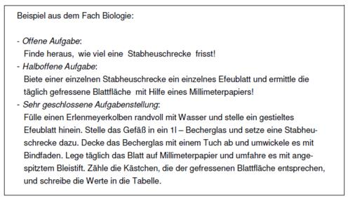

Motivation
Unter intrinsischer Motivation wird die natürliche Tendenz verstanden, Herausforderungen aufzusuchen und seine eigenen Fähigkeiten und Beweis stellen zu wollen. Im Gegensatz hierzu spricht man von extrinsischer Motivation, wenn auf Grund der befürchteten Konsequenzen der Handlungsergebnisse (z.B um einer Strafe zu entgehen oder um eine gute Note zu bekommen) gehandelt wird.
Deci und Ryan gehen von drei psychischen Grundbedürfnissen aus, welche wichtig sind, um die intrinsische Motivation zu fördern: Dem Bedürfnis nach Kompetenz, dem Bedürfnis nach Selbstbestimmung und dem Bedürfnis nach sozialer Eingebundenheit. Damit intrinsische Motivation entstehen kann, müssen die Bedürfnisse nach Kompetenz und Autonomie gegeben sein. Das Bedürfnis nach Kompetenz und Autonomie erweist sich wiederum als wichtig, um selbstgesteuertes Lernen zu ermöglichen. Das Ausmaß an Motivation wird zudem durch das Ausmaß an Selbstbestimmung beeinflusst.
Intrinsische Motivation kann durch äußere Anreize in extrinsische Motivation übergehen. Um extrinsische Motivation zu vermeiden, ist es wichtig, externe Kontrollen möglichst gering zu halten und informatives Feedback anstelle von kontrollierendem Feedback zu geben.
Tutees sollten regelmäßiges Feedback bezüglich ihrer Leistung erhalten. Das Feedback kann hierbei in unterschiedlichen Formen erfolgen, beispielsweise über eine Leistungsrückmeldung in Form von Quizzes, einer Probeklausur oder Multiple-Choice-Fragen. Für die schnelle Durchführung von Quizzes, bei der alle Studierenden (unabhängig der Größe des Tutorats) teilnehmen können und eine direkte Lösungsaufzeigung erfolgt, eignet sich die folgende Website:
Relevanz/ Aktualität/ Persönlicher Bezug
Um die Motivation der Studierenden zu fördern, ist wichtig, aktuelle oder persönliche Bezüge herzustellen. Didaktische Methoden die sich hierfür besonders anbieten sind beispielsweise das Problem Based Learning, Case Studies sowie die Anchored Instruction Methode. Diese Lernformen haben gemeinsam, dass es sich um Lehr-Lernmethoden handelt, die narrative Anker einsetzt, um die Lernenden zu motivieren. Dies gelingt durch praxisnahe Beispiele oder wie bei den Case Studies, durch den Einsatz von Fallstudien, die von den Studierenden bearbeitet werden. Weitere Informationen sind unter der Rubrik weiterführende Links einsehbar. Unter der Rubrik Beispiele ist eine Tabelle mit Umsetzungsbeispielen für das Lernen an Fällen und Beispielen gegeben.
Ansatzpunkte zur Förderung des Bedürfnisses der Kompetenz
Um Studierende zu motivieren, ist es wichtig die Aufgabenschwierigkeit anzupassen. Aufgaben sollten weder unter- noch überfordern. Differenzierung von Aufgabenschwierigkeit: Die Komplexität der Aufgabenstellung kann unterschiedlich hoch ausgestaltet werden, indem verschiedene Frage- und Aufgabeformate eingesetzt werden. Zu unterscheiden ist hierbei zwischen offenen Aufgaben, halboffenen Aufgaben und geschlossenen Aufgaben. Ein Beispiel zu den unterschiedlichen Frage- und Aufgabeformate finden Sie unter der Rubrik Beispiele.
Link zur kostenlosen Gestaltung von Quizzes:
Link zur Lernmethode Anchored instruction:
Link zur Lernmethode Problem based Learning:
Beispiele zur Differenzierung der Aufgabenschwierigkeit
Aufgaben die hohe Anforderungen an die Tutees stellen, können durch Lernhilfen entlastet werden, welche bei Bedarf seitens der Tutees genutzt werden können:

Beispiele Lernen an Fällen und Problemen: